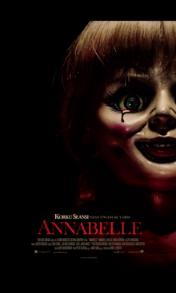

Korku filmi izleyicilerde korku, dehşet, terör veya tiksinti
uyandırmak amacıyla kurgulanan bir film türüdür.
Korku filmlerinin konusunu gündelik hayata sızan
ve bazen doğaüstü şekillerde ortaya çıkan şeytani güçler, olaylar ya da karakterler oluşturur.
En sevdiğim korku filmi posteri aşağıdaki gibidir.
